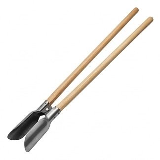
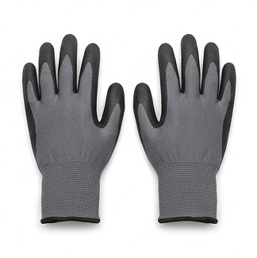
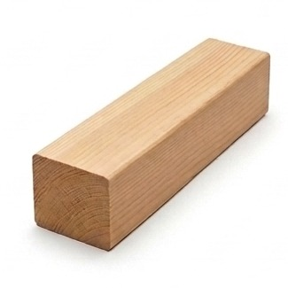
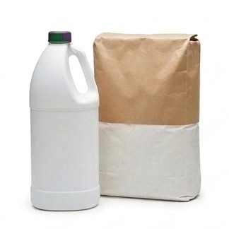
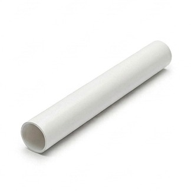
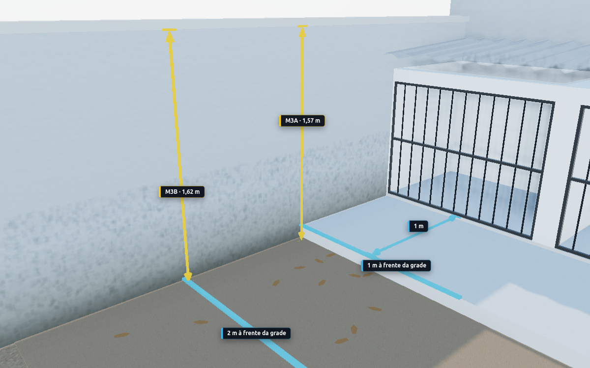
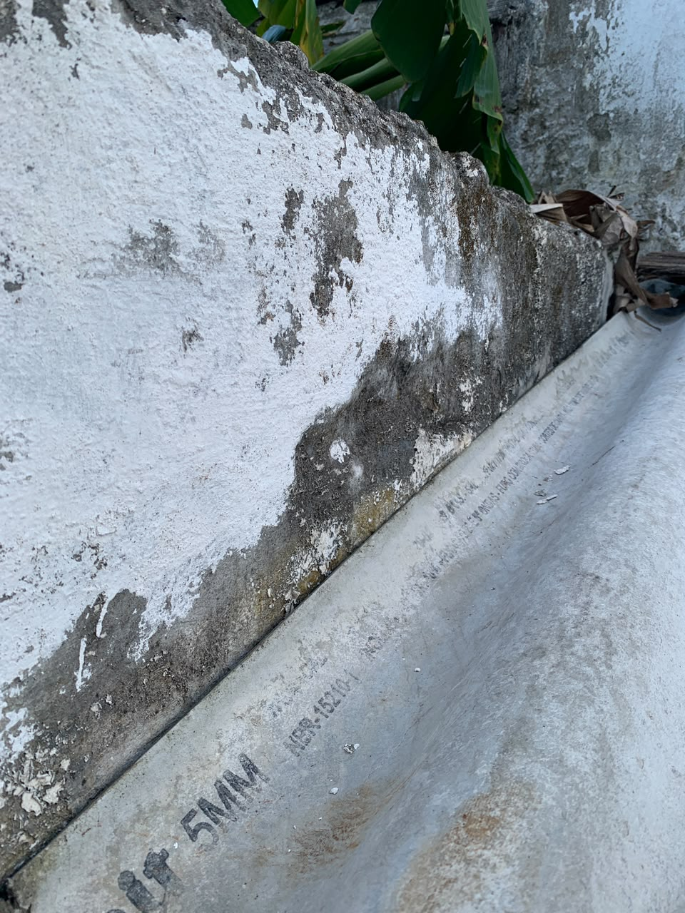
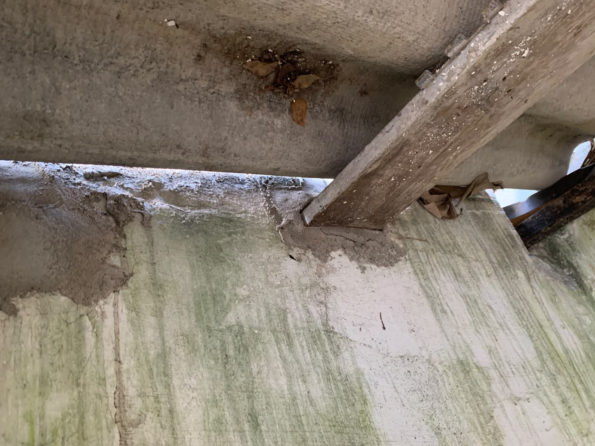
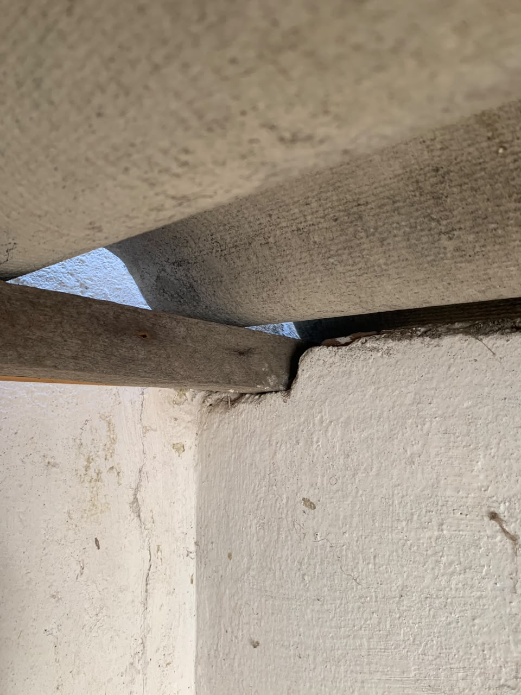

Comece aqui Os 23 passos, custo e notas
Passo a passo resumido (marque ao terminar)
Etapa 0 · Limpeza e vãos → ver etapa
Etapa 1 · Canil 1 → ver etapa
Etapa 2 · Estrutura → ver etapa
Etapa 3 · Tela → ver etapa
Etapa 4 · Aves → ver etapa
Custo estimado (faixas de anúncios online de 19/11/2026; * = estimativa sem anúncio)
| Item | R$ |
|---|---|
2 barras de PVC soldável 25 mm × 6 m | 54–84 |
3 joelhos 90° 25 mm * | 6–12 |
Tela hexagonal 1" × 1,50 m, 6 m | 72–96 |
Tela soldada 1/2", 3 m | 75–160 |
| 3 sarrafos + caibro + pregos | 28–103 |
| Arame, grampos, abraçadeiras, buchas * | 40–60 |
| Cal, areia, maravalha, kit de bicos | 61–114 |
| Total da obra | ≈ R$ 340 – 630 |
| 5 frangas | 100–175 |
| Com as aves (sem ração) | ≈ R$ 440 – 805 |
Notas:
- A tela
1/2"e o interior custam o mesmo em qualquer versão, e vão para a v2. - Do cercado, só se perdem os canos (
~R$ 60–100) e os sarrafosS1–S3. As telas viram material da v2. - Preços de loja de João Pessoa não conferidos. Balde de 10 L e galão de 20 L são de casa; ração não entra no total.
Lista exata de compra na Madeireira e Loja de construção · Fotos e destino na v2 em Materiais v1.
Madeireira Lista exata para pedir na madeireira
- 3 sarrafos de
2,5 × 5 cmcom3 metros - 1 pedaço de caibro
5 × 5 cmcom1,30 m, sem tratamento (poleiro) - 1/4 kg de prego
18×27
Plano de corte dos sarrafos (em cm)
| Sarrafo | Cortes (cm) | Sobra (cm) |
|---|---|---|
| 1 | 140 (S1, parede do canil) + 150 (S2, muro) | 10 |
| 2 | 100 (S3, calçada) + 45 + 45 (suportes do poleiro) + 50 + 50 (lados curtos do tabuleiro) | 10 |
| 3 | 130 + 130 (lados compridos do tabuleiro) | 40 |
Texto simples para mostrar no balcão
Bom dia! Preciso de: - 3 sarrafos de 2,5 x 5 cm com 3 metros cada - 1 pedaço de caibro 5 x 5 cm com 1,30 m, SEM tratamento (para poleiro) - 1/4 kg de prego 18x27
2,5 × 5 cm) não é caibro (5 × 5 cm ou mais) nem ripa (~1,5 × 5 cm).
Loja de material de construção (fora da madeireira)
- 2 barras de tubo PVC soldável
25 mm × 6 m+ 3 joelhos90°de25 mm(não precisa de cola). - Tela hexagonal
1" × 1,50 m:6 m. - Tela soldada
1/2":3 m. - Arame recozido nº 18:
1 rolo· Grampos3/4":1 caixa· Abraçadeiras de nylon:1 pacote. - 2 abraçadeiras tipo D de
3/4"· ~18 buchas8 mmcom parafuso. - Cal hidratada:
20 kg· Areia:1 saco· Maravalha:1 fardo· Kit de 10 bicos nipple. - Balde de 10 L e galão de 20 L: de casa (mais 1 balde de 20 L para o ninho com ~16 semanas).
v1 · Cercado de PVC Canil 1 + cercado provisório de PVC 1,40 × 1,50 m
A v1 é provisória, para 1 a 3 meses, e tem de ser o mais barata possível. O cercado é pequeno, de cano PVC com tela, só na frente do Canil 1: na calçada e num pedaço de terra. À noite, a segurança é o Canil 1 fechado no ferrolho com tela soldada 1/2" na grade e nos 4 vãos; de dia, o PVC com tela segura as frangas e afasta gato e pássaro.
x 0–1,40 (do muro ao meio da divisória) e z 1–2,50 (1 m de calçada + 0,50 m de terra). Somando 1,3 m² do Canil 1, dá ~3,4 m² totais para 5 frangas por 1–3 meses.
30 cm na terra (1,50 m livres), 1 pé na divisória preso com 2 abraçadeiras tipo D e 2 barras no topo. Tudo encaixado nos 3 joelhos sem cola e amarrado com abraçadeiras de nylon e arame.
1,40 × 1,50 m) é presa no cano com 4 ou 5 ganchos de arame — solte os ganchos para entrar. O lado esquerdo é o próprio muro (1,57–1,62 m, mais alto que o cercado) e não leva tela.
Coordenadas e peças (iguais às do 3D, em metros)
x a partir do muro esquerdo · z a partir da parede do fundo dos canis.
| Peça | Onde / Medida |
|---|---|
| Canil 1 (dormitório) | x 0–1,30, z 0–1,00 (~1,3 m², piso ~13 cm acima da terra) |
| Calçada (patamar) | z 1–2 (~13 cm acima da terra; dentro do cercado: 1,40 × 1,00 m) |
| Terra do cercado | z 2–2,50 (1,40 × 0,50 m; 30 cm de saia de tela por fora com pedras) |
| Teto inclinado | Do S1 (z = 1, ~1,15 m do patamar / ≈ 1,28 m da terra, abaixo da telha velha e sem prender nela) até a barra da frente (z = 2,50, 1,50 m) |
S1 (sarrafo 1,40 m) | Parafusado com bucha 8 mm no topo da parede da frente do Canil 1 (x 0–1,40); segura o teto e o balde de bicos |
S2 (sarrafo 1,50 m) | Parafusado inclinado no muro esquerdo (x = 0), de ≈ 1,28 m até 1,50 m (em z = 2,50) |
S3 (sarrafo 1,00 m) | Parafusado no cimento da calçada ao longo de x = 1,40 (z 1–2); prende o pé da tela à direita |
| 2 pés de PVC na frente | 1,80 m cada, em (0,05; 2,50) e (1,40; 2,50), enterrados 30 cm na terra e socados (1,50 m livres) |
| 1 pé de PVC na divisória | Em (1,40; 1,00) sobre a calçada, encostado na cara da divisória; medir do cimento até 1,50 m da terra; 2 abraçadeiras tipo D 3/4" |
| Barras do topo + 3 joelhos | Frente (1,40 m, x 0–1,40) e lado direito (1,50 m, z 1–2,50) a 1,50 m; 3 joelhos 90° + amarração na quina frente-direita |
Muro esquerdo (x = 0) | Medido 1,57–1,62 m da terra, mais alto que o cercado; não leva tela |
Ferramentas & EPIs O que precisa para montar o cercado de PVC








Outros itens simples de casa: lixa (para tirar a rebarba dos cortes no cano PVC), broxa ou pincel (para caiar), vassoura, pau para socar terra e pedra, peneira (para o tabuleiro), mangueira e papel branco ou lenço (para conferir pixilinga à noite).
Lista de Materiais v1 O que fica na v2 vs o que sai na v2
≈ R$ 340 – 630 na obra; ≈ R$ 440 – 805 com as 5 frangas) estão em Comece aqui. Os detalhes para pedir na loja estão em Madeireira.
| ✓ | Foto | Etapa / Uso | Material | Especificação | Quantidade |
|---|---|---|---|---|---|
| FICA NA v2 (tela 1/2" da grade e todo o interior do Canil 1) | |||||
 | Etapas 0 e 1 | Tela soldada galvanizada 1/2" | Grade do Canil 1 (fica na v2) + 5 tiras de 15 cm × 1,00 m nos 4 vãos (saem com a telha velha e vão para os vãos de ventilação da v2) | 3 m | |
 | Etapa 1 | Caibro 5 × 5 cm × 1,30 m | Madeira sem tratamento, poleiro solto sobre 2 suportes (sem parafuso no poleiro) | 1 pedaço (1,30 m) | |
 | Etapa 1 | Suportes do poleiro e moldura do tabuleiro | Saem dos sarrafos 2 e 3: 2 × 45 cm (suportes) + 2 × 130 cm e 2 × 50 cm (moldura 1,30 × 0,55 m, borda 5 cm, sem fundo) | Parte dos 3 sarrafos | |
 | Etapa 0 | Cal hidratada | 2 demãos nas paredes internas do Canil 1 e na viga velha | 20 kg | |
 | Etapas 1 e 4 | Areia | ~3 cm na moldura do tabuleiro (direto no cimento) e no banho de terra | 1 saco | |
 | Etapa 1 | Maravalha grossa | Cama de 8–10 cm no piso do Canil 1 | 1 fardo | |
 | Etapa 1 | Galão 20 L + cano 100 mm | Comedouro dentro do Canil 1 (galão de casa) | 1 | |
| Etapa 4 | Balde 10 L (de casa) + kit de 10 bicos nipple | Pendurado com arame no S1 (canto direito, sobre a calçada) — nunca no PVC | 1 + 1 | |
| Etapa 1 (~16 sem.) | Balde 20 L (ninho) | Deitado, plástico sem emenda, entra com ~16 semanas (vira 1 dos 3 ninhos da v2) | 1 | |
| SAI NA v2 (canos e sarrafos S1–S3 perdem-se; telas do cercado viram retalho na v2) | |||||
 | Etapa 2 | Tubo PVC soldável 25 mm × 6 m + 3 joelhos 90° de 25 mm | 2 pés da frente (1,80 m), 1 pé na divisória, barra da frente (1,40 m) e barra do lado (1,50 m), sem cola. Perde-se na v2. | 2 barras + 3 joelhos | |
| Etapa 2 | Sarrafos S1 (1,40 m), S2 (1,50 m) e S3 (1,00 m) | Do conjunto de 3 sarrafos 2,5 × 5 × 300 cm + 1/4 kg prego 18×27. S1–S3 saem na v2 (furos tapados com massa). | 3 sarrafos (total da obra) + 1/4 kg prego | |
 | Etapa 3 | Tela hexagonal 1" × 1,50 m | Lado direito, teto inclinado, frente (entrada com ganchos) e saia de 30 cm. Na v2, vira retalho para os triângulos e emendas. | 6 m | |
 | Etapas 0, 2 e 3 | Arame recozido nº 18 + grampos 3/4" + abraçadeiras de nylon | Amarrar tela nos canos/ganchos, prender quina do PVC e grampear tela em S1–S3 | 1 rolo + 1 caixa + 1 pacote | |
 | Etapas 1 e 2 | 2 abraçadeiras tipo D 3/4" + ~18 buchas 8 mm com parafuso | Prender o pé de PVC da divisória e fixar S1, S2, S3 e suportes na alvenaria/calçada | 2 + ~18 | |
Itens extras de manejo e aves da v1: 5 frangas de poedeira comercial (35 dias, vacinadas), ração de crescimento (até ~16 semanas) e de postura (depois), 1 ovo falso (para o ninho com ~16 semanas), folhas secas do quintal e cinza de lenha, pedras para segurar a saia de 30 cm por fora, bebedouro comum nos primeiros dias para treinar o bico, e pote de calcário ou farinha de ostra quando começarem a botar.
Oficina do Iniciante Caiar, cortar/encaixar PVC, enterrar pé, bucha 8 mm e tela
Sem massa nem tijolo na v1. As técnicas abaixo cobrem toda a montagem:
1. Como caiar o Canil 1 e a viga velha (2 demãos)

2. Como cortar e encaixar PVC (serrote, lixar a rebarba, sem cola) e enterrar os 2 pés

90° de 25 mm (sem cola, para desmontar fácil na v2). Na quina frente-direita, amarre a barra do lado com abraçadeira de nylon e arame nº 18.30 cm): abra os 2 buracos de 30 cm com cavadeira ou enxada, apoie os pés de 1,80 m (ficam 1,50 m acima da terra), confira o prumo e devolva terra com pedras socando firme com um pau a cada camada.3. Bucha 8 mm, madeira e grampear/amarrar tela

18×27 para não rachar.8 mm: use furadeira + broca vídea 8 mm na parede dos canis (S1 e suportes), no muro (S2), na calçada (S3) e na divisória (abraçadeiras tipo D). Tire o pó, encaixe a bucha rente e aperte o parafuso.
3/4" nos sarrafos (S1, S2, S3) e alicate com arame recozido nº 18 nos canos PVC e emendas. Nunca prender nada na telha.Etapa 0 · Medidas, Limpeza e Vãos Passos 1 a 4 — conferir medidas de 19/11, limpar, caiar e fechar vãos
📏 Medidas tiradas no local em 19/11/2026 (trena)
Medidas reais tiradas com a trena em 19/11 (fotos-19-11/LEIA.md). Elas definem as 5 tiras de tela 1/2" do Canil 1, a altura do sarrafo S1 (~1,15 m do patamar, abaixo da telha velha) e confirmam que o muro esquerdo é mais alto que o cercado.



O que cada medida definiu na v1 de PVC:
- M1 — Borda da telha velha (1,20–1,30 m do patamar): o topo da parede da frente dos canis fica a
~1,16 mdo patamar. O sarrafoS1vai ali a~1,15 mdo patamar (≈ 1,28 mda terra), logo abaixo da telha e sem prender nela, de onde o teto inclinado sobe até1,50 mna frente. - M2 — Vãos parede–telha nos 4 lados do Canil 1:
4 / 9 cmna frente (M2A) e~5 cmna esquerda, fundo e divisória (M2B–M2D). Como todos passam de2 cm(passa rato), os 4 lados do Canil 1 levam 5 tiras de tela1/2". - M3 — Altura do muro esquerdo (1,57 m e 1,62 m da terra): o muro é mais alto que o cercado (
1,28 → 1,50 m), então não leva tela na esquerda — só o sarrafoS2inclinado parafusado no muro. - M4 — Largura até o meio da divisória: marca o limite direito do cercado de PVC (
x = 1,40 ma partir do muro).
Tabela conferida em 19/11/2026:
📷 Fotos reais do local (19/11/2026) — clique para ampliar





- Passo 1 · Limpar o Canil 1 sem tirar madeira do telhado: com luvas, vassoura e pá/enxada, esvazie o Canil 1 e tire folhas secas, teia e poeira de cima das tábuas e da viga. Pelas fotos de 19/11, toda a madeira embaixo da telha (as 3 tábuas do canto, a viga da parede da frente, a ripa do canto e a lona enrolada na viga escura) está apoiada na parede e segura a telha: nada disso sai. Escove bem com escova dura (o ácaro se esconde na fresta) para depois caiar junto com a parede. ⚠️ Não tire nada que segura a telha. A telha velha continua sendo o teto do canil na v1. Teste antes: empurre a peça com a mão. Se ela se mexe e a telha não se mexe junto, é tralha e sai. Se a telha está apoiada nela, se mexe ou range quando você empurra, ou se ela está pregada/chumbada entre a parede e a telha, ela fica: só escove, tire o pó e caie junto com a parede (o ácaro se esconde na fresta, e a cal fecha). Na dúvida, deixe e tire foto.
- Passo 2 · Lavar e deixar secar: varra, lave o piso e as paredes do Canil 1 com vassoura e mangueira e espere secar bem.
- Passo 3 · Caiar o Canil 1 e a viga (2 demãos e máscara PFF2): vestindo luvas e máscara PFF2, misture cal hidratada com água no balde e aplique 2 demãos com broxa ou pincel nas paredes internas do Canil 1 e na viga velha antes de as aves entrarem. Fecha microfrestas contra ácaro e tira o limo verde. Deixe secar bem.
- Passo 4 · Grampear e amarrar as 5 tiras de tela
1/2"nos 4 vãos entre a parede e a telha: todos os vãos passam de2 cm(4 / 9 cmna frente emM2Ae~5 cmnos outros 3 lados emM2B–M2D). Corte 5 tiras de15 cm × 1,00 mdo rolo de tela soldada1/2"(trena,alicate,luvas) e feche os 4 lados: cada tira fica de pé, rente à face interna da parede, presa embaixo com bucha8 mme arruela ou grampo3/4"na viga de madeira (furadeira + broca vídea8 mm/ martelo) e dobrada em cima contra a telha, acompanhando as ondas (nunca amarrar na borda da telha). Na v2, saem com a telha velha e vão para os vãos de ventilação.
Etapa 1 · Canil 1 Passos 5 a 9 — tela 1/2" na grade, poleiro solto, moldura do tabuleiro, maravalha e comedouro
- Passo 5 · Tela
1/2"na grade: meça com a trena, corte com o alicate (de luvas) a tela soldada1/2"e amarre em toda a grade do Canil 1 com arame recozido nº 18 torcido no alicate. De dia, a grade fica amarrada aberta; à noite, fica fechada no ferrolho para proteger de timbu e rato. - Passo 6 · Suportes de
45 cm+ poleiro solto: marque com a trena a30 cmda parede do fundo e~30 cmde altura do piso, fure as duas paredes laterais com furadeira e broca vídea8 mm, encaixe buchas8 mme parafuse os 2 suportes de sarrafo de45 cm(do Sarrafo 2). Apoie por cima, solto e sem parafuso, o poleiro de caibro5 × 5 cm × 1,30 m(madeira sem tratamento — sai inteiro para escaldar e tomar sol). Sobe para45 cmcom~2 mesesde idade. - Passo 7 · Moldura do tabuleiro no piso + areia: corte os 4 sarrafos do Sarrafo 2 e 3 (
2 × 130 cm+2 × 50 cm), faça pré-furo com broca fina de madeira e pregue com pregos18×27e martelo só a moldura de sarrafo em pé (1,30 × 0,55 m, borda5 cm), SEM FUNDO. Apoie direto no piso de cimento, embaixo do poleiro, e encha com~3 cmde areia. É o que mais segura o cheiro. - Passo 8 · Maravalha: espalhe
8–10 cmde maravalha grossa no resto do piso do Canil 1 usando luvas ou pá/enxada. - Passo 9 · Comedouro: monte o comedouro de galão 20 L (de casa) com cano
100 mme pendure com arame recozido nº 18 na altura do dorso delas (rato e pardal não alcançam). - Depois (~16 semanas) · Ninho de balde: apoie e prenda com arame nº 18 1 balde de 20 L deitado (plástico sem emenda, borda na boca) a
15 cmdo piso, com 1 ovo falso dentro, e troque para ração de postura.

Etapa 2 · Estrutura (Madeira & PVC) Passos 10 a 16 — sarrafos S1–S3, cortes de PVC, 2 pés na terra, pé da divisória e joelhos
- Passo 10 · Parafusar o
S1no topo da parede do Canil 1 (bucha8 mm): corte140 cmdo Sarrafo 1 com o serrote. Marque no topo da parede da frente do Canil 1 (x 0–1,40, a~1,15 mdo patamar, logo abaixo da borda da telha velha e sem prender nela), fure com furadeira + broca vídea8 mme parafuse com buchas8 mme chave. Segura o teto e depois o balde de bicos. - Passo 11 · Parafusar o
S2inclinado no muro: use os150 cmrestantes do Sarrafo 1. No muro esquerdo (x = 0), risque a linha inclinada de≈ 1,28 mda terra (junto à parede do canil) até1,50 mda terra (emz = 2,50), fure com broca vídea8 mme parafuse com buchas8 mm. Prende a borda esquerda do teto. - Passo 12 · Parafusar o
S3no cimento da calçada, emx = 1,40: corte100 cmdo Sarrafo 2 com o serrote. Alinhe ao longo dex = 1,40(no eixo da divisória, dez = 1az = 2), fure o cimento com broca vídea8 mm(sem quebrar a borda) e parafuse com buchas8 mm. Prende o pé da tela do lado direito na calçada. - Passo 13 · Cortar os canos PVC
25 mmcom serrote e lixar a rebarba: meça com a trena e serre as 2 barras de 6 m (5 peças ao todo, e tire a rebarba das pontas com lixa):- 2 pés da frente:
1,80 mcada; - 1 pé da divisória: medir na hora do cimento da calçada até
1,50 mda terra (aprox.1,35–1,40 m); - 1 barra do topo da frente:
1,40 m; - 1 barra do topo do lado direito:
1,50 m.
- 2 pés da frente:
- Passo 14 · Enterrar os 2 pés da frente
30 cm, a1,50 mda parede dos canis: use a cavadeira ou enxada para abrir os 2 buracos de30 cmna terra e coloque os 2 pés de1,80 m(ficam1,50 macima da terra). 📏 Como marcar com a trena: os pés da frente ficam a1,50 mda parede da frente dos canis (50 cmdentro da terra depois da calçada de1 m); um junto do muro ((0,05; 2,50)) e outro no eixo da divisória, a1,40 mdo muro ((1,40; 2,50)). Confira o esquadro medindo as duas diagonais. Devolva terra com pedras aos poucos, socando bem com um pau e conferindo o prumo e a altura de1,50 macima da terra. - Passo 15 · Prender o pé da divisória com 2 abraçadeiras tipo D + buchas
8 mm: apoie o pé da divisória em pé sobre a calçada em(1,40; 1,00), encostado na cara da divisória, fure com broca vídea8 mme fixe com 2 abraçadeiras tipo D de3/4"e buchas8 mm. - Passo 16 · Encaixar os 3 joelhos e as barras do topo e amarrar a quina: sem usar cola, encaixe os 3 joelhos
90°de25 mme as barras do topo: canto frente-esquerda (pé → barra da frente1,40 m), canto frente-direita (pé → barra da frente) e topo do pé da divisória (pé → barra do lado1,50 m). Na quina frente-direita, amarre firme a barra do lado no canto com abraçadeiras de nylon e arame recozido nº 18 (alicate).
Etapa 3 · Tela do Cercado Passos 17 a 20 — lado direito, teto inclinado, frente com ganchos e saia de 30 cm
- Passo 17 · Lado direito (
x = 1,40): corte com trena e alicate (de luvas) um pano de tela hexagonal1" × 1,50 mdo chão à barra do topo, dez = 1a2,50. Prenda com martelo e grampos3/4"no sarrafoS3sobre a calçada e amarre nos canos PVC (pé da divisória, pé da frente e barra do topo) com arame recozido nº 18 torcido no alicate. - Passo 18 · Teto inclinado: estenda a tela hexagonal
1" × 1,50 mdoS1até a barra da frente, e doS2(muro) até a barra do lado direito. Prenda com grampos3/4"noS1e noS2e amarre firme com arame nº 18 nas barras de PVC da frente e do lado (nunca amarrar na telha). O lado esquerdo é o próprio muro (1,57–1,62 m) e não leva tela. - Passo 19 · Frente amarrada com ganchos (é a entrada): corte a folha da frente (
1,40 × 1,50 m, emz = 2,50), prenda embaixo/lados se precisar e amarre nos canos de PVC com 4 ou 5 ganchos de arame. Não tem porta: para entrar, basta soltar os ganchos. - Passo 20 · Saia de
30 cmna terra com pedras: corte uma faixa de30 cmde largura da tela hexagonal e deite na terra por fora, na frente (1,40 m) e no lado direito da terra (z 2–2,5,0,50 m), amarrada na borda inferior da tela e bem segura com pedras por cima contra quem cava.

Etapa 4 · Aves e Operação Passos 21 a 23 — balde de bicos no S1, banho de terra e 5 frangas
- Passo 21 · Balde de bicos no
S1, sobre a calçada: monte o balde de 10 L (de casa) com tampa e 2–3 bicos nipple do kit no fundo. Pendure com arame recozido nº 18 no sarrafoS1, no canto direito (x ≈ 1,2), sobre a calçada (para os pingos caírem no cimento e não virarem lama), na altura da cabeça delas esticada. NUNCA pendurar na barra de PVC, porque 10 L de água entortam o cano. - Passo 22 · Banho de terra + folhas secas: deixe a calçada (
1,40 × 1,00 m) em cimento liso, sem cama (raspar 2× por semana). Na parte de terra (z 2–2,50,1,40 × 0,50 m), espalhe folhas secas do quintal e monte num canto o banho de terra misturando areia e cinza de lenha com a enxada. - Passo 23 · Soltar as 5 frangas, com um bebedouro comum nos primeiros dias: escolha 5 frangas de poedeira comercial (Lohmann, Isa Brown ou Embrapa 051) com 35 dias, vacinadas (em João Pessoa não precisam de lâmpada). Antes de soltar, olhe embaixo das asas e em volta da cloaca. Deixe um bebedouro comum junto nos primeiros dias e toque no bico nipple para ensiná-las a beber.
- Dia e noite · Grade e postura: de dia a grade do Canil 1 fica amarrada aberta; ao escurecer, feche a grade no ferrolho (obrigatório). Dê ração de crescimento até ~16 semanas; depois entre com o ninho de balde 20 L, ração de postura e um pote de calcário ou farinha de ostra quando começarem a botar.


Rotina Manutenção diária, semanal e mensal da v1
| Quando | O quê | Tempo |
|---|---|---|
| Todo dia | Abrir a grade de manhã, fechar à noite no ferrolho, olhar o balde e, depois de ~18–20 semanas, pegar os ovos | 2 min |
| 2× por semana | Peneirar a areia do tabuleiro e raspar a calçada (o cocô vai para a compostagem da horta) | 5 min |
| 1× por semana | Revirar a maravalha e as folhas, completar o balde de água e conferir amarrações e pedras da saia | 10 min |
| A cada ~3 semanas | Encher o comedouro | 5 min |
| 1× por mês | Conferir pixilinga à noite (seção abaixo) | 5 min |
| A cada 2–3 meses | Trocar toda a cama, que vai para a horta | 20 min |
Estimativas, sem medição: 5 aves bebem por volta de 1–1,5 L/dia no calor, então 10 L duram ~1 semana. A ração é ~120 g/dia por adulta (vídeo E7paYev-HyA), e o galão de 20 L dura 2–3 semanas. As hortas continuam como no PROJETO-HORTAS.md.
Pixilinga Prevenção e controle de ácaros e piolhos de galinha (vale para v1 e v2)
O ácaro vermelho passa o dia escondido em fresta de madeira, emenda de ninho e trinca de parede, e sobe nas aves à noite. Por isso:
- Sem esconderijo: caiar (cal hidratada com água, 2 demãos) as paredes internas do Canil 1 e a viga velha antes de as aves entrarem (também tira o limo verde), e escovar e caiar as tábuas e a viga embaixo da telha (elas seguram o telhado e ficam) do Canil 1.
- Poleiro removível: caibro
5 × 5 × 1,30 msolto sobre os 2 suportes de45 cm, sem parafuso no próprio poleiro — assim sai inteiro para escaldar e tomar sol. - Ninho de balde: balde de 20 L deitado (entra com ~16 semanas), de plástico, sem emenda, com borda na boca. Lava com mangueira.
- Banho de terra: canto do cercado com areia e cinza de lenha. É o que elas fazem por conta própria contra parasita.
- Pardal fora: comedouro dentro do canil e tela no cercado inteiro. Pássaro de fora traz ácaro.
- Ave nova: comprar de fornecedor que vacina; antes de entrar no bando, olhar embaixo das asas e em volta da cloaca; manter 2–3 semanas separada.
- Conferência 1× por mês, à noite: passar papel branco ou lenço embaixo do poleiro e nas emendas. Pontinhos vermelhos ou cinza que se mexem são ácaro.
Evolução Passagem da v1 para a v2
A v2 é construída em volta do cercado de PVC, com as aves dentro: mureta, estacas, tela, porta e, por último, o telhado novo:
 🔀 v1 sobre v2 em 3D: verde = fica, laranja = sai. Abrir v1 sobre v2 →
🔀 v1 sobre v2 em 3D: verde = fica, laranja = sai. Abrir v1 sobre v2 →
- Construir a v2 por fora: levante a mureta, finque as estacas da v2, feche a tela externa, instale a porta e, por último, coloque o telhado novo — tudo em volta do cercado de PVC, com as aves dentro.
- Quando o solário da v2 fechar: desmonte o cercado de PVC (como não tem cola, basta soltar arames e abraçadeiras); tire
S1,S2eS3e tape os furos de bucha com massa. - Reaproveitar as telas e abrir o Canil 2: a tela hexagonal do cercado vira retalho para os triângulos laterais e emendas da v2; as 5 tiras
1/2"saem junto com a telha velha e vão para os vãos de ventilação. Instale os 3 ninhos de balde (o da v1 é um deles) e o 2º poleiro.
✅ Fica na v2
- tela soldada
1/2"na grade do Canil 1; - todo o interior do Canil 1: poleiro de caibro, suportes de
45 cm, moldura do tabuleiro, comedouro de 20 L, balde de bicos 10 L e ninho de balde 20 L.
♻️ Vira material da v2
- tela hexagonal
1"(6 m) do cercado: vira retalho para os triângulos e emendas da v2; - 5 tiras de tela
1/2"dos vãos do Canil 1: saem com a telha velha e vão para os vãos de ventilação da v2.
🗑️ Perde-se
- os canos PVC
25 mm(2 barras + 3 joelhos) e os 3 sarrafosS1–S3(~R$ 80–180ao todo); - os furos de bucha de
S1–S3e das abraçadeiras tipo D (que se tapam com massa).
Riscos Pontos de atenção da v1 de PVC
- PVC fraco: aguenta tela e galinha, mas não cachorro empurrando. Conferir as amarrações toda semana (e nunca pendurar o balde de 10 L de água na barra de PVC).
- Noite: fechar a grade do Canil 1 toda noite no ferrolho é obrigatório. O cercado de PVC não protege de timbu à noite.
- Espaço:
~2 m²fora dá para frangas por 1 a 3 meses. Adultas por mais tempo pedem a v2. - Enchente: a terra do cercado alaga primeiro; as aves ficam no Canil 1 (piso
~13 cmacima da terra). Em chuva forte, subir o comedouro e depois trocar a cama molhada. - Saia: conferir as pedras da saia de
30 cmtoda semana.